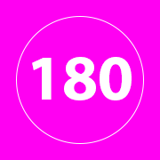
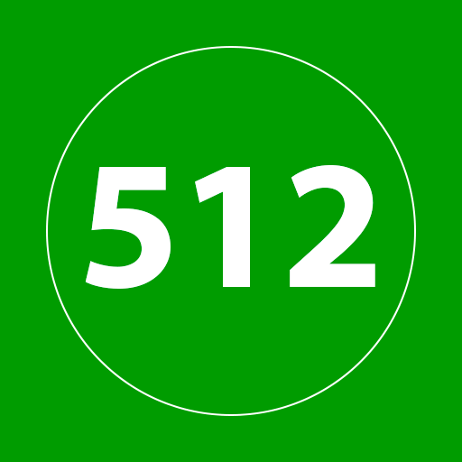

For seeing which applications use which icons in which contexts (because nothing is ever simple).
| Icon | File used / dimensions |
|---|---|
| favicon.ico (16×16) | |
| favicon.ico (32×32) | |
| favicon.ico (48×48) | |
| favicon.svg (variable) | |
|  | icon-180.png (180×180) |
| icon-192.png (192×192) | |
|  | icon-512.png (512×512) |
| icon-mask.svg (variable) |